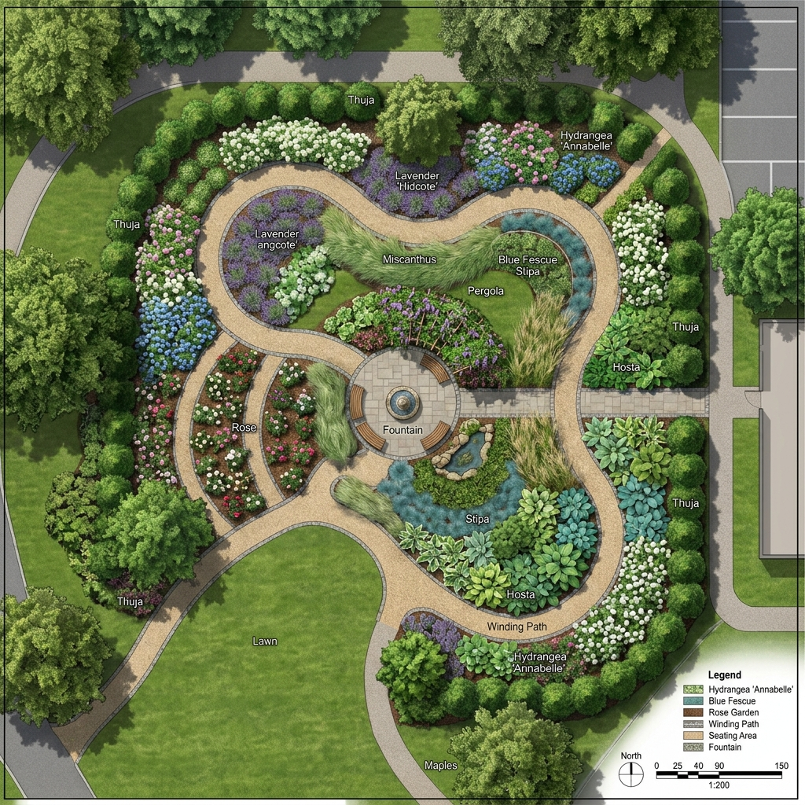
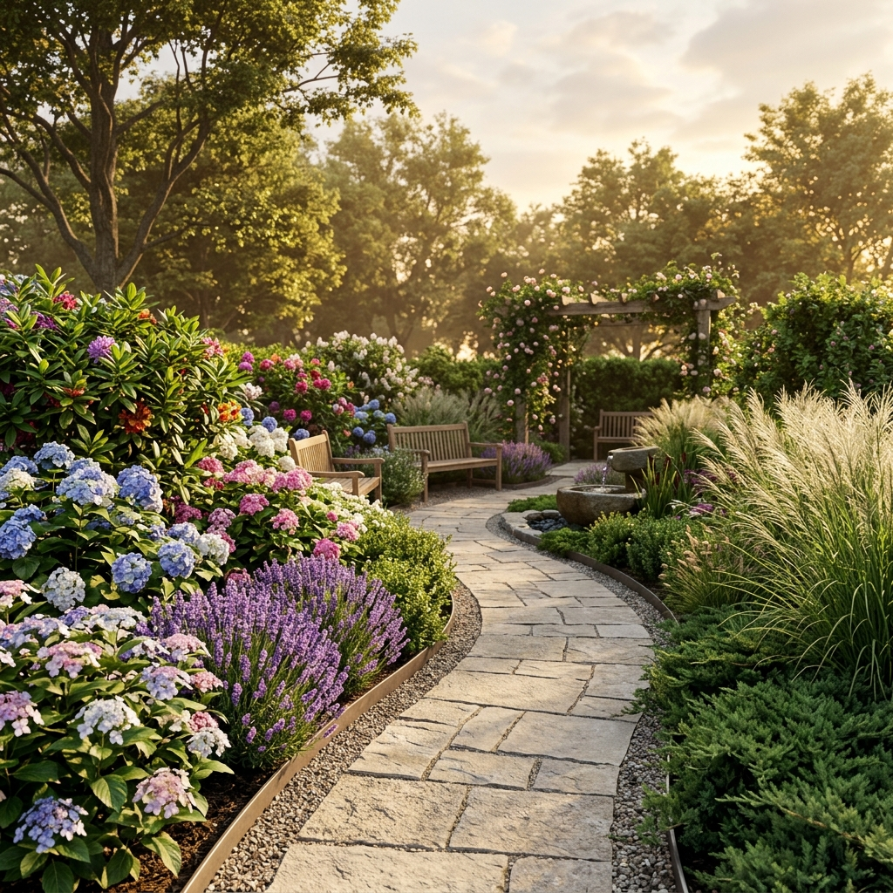
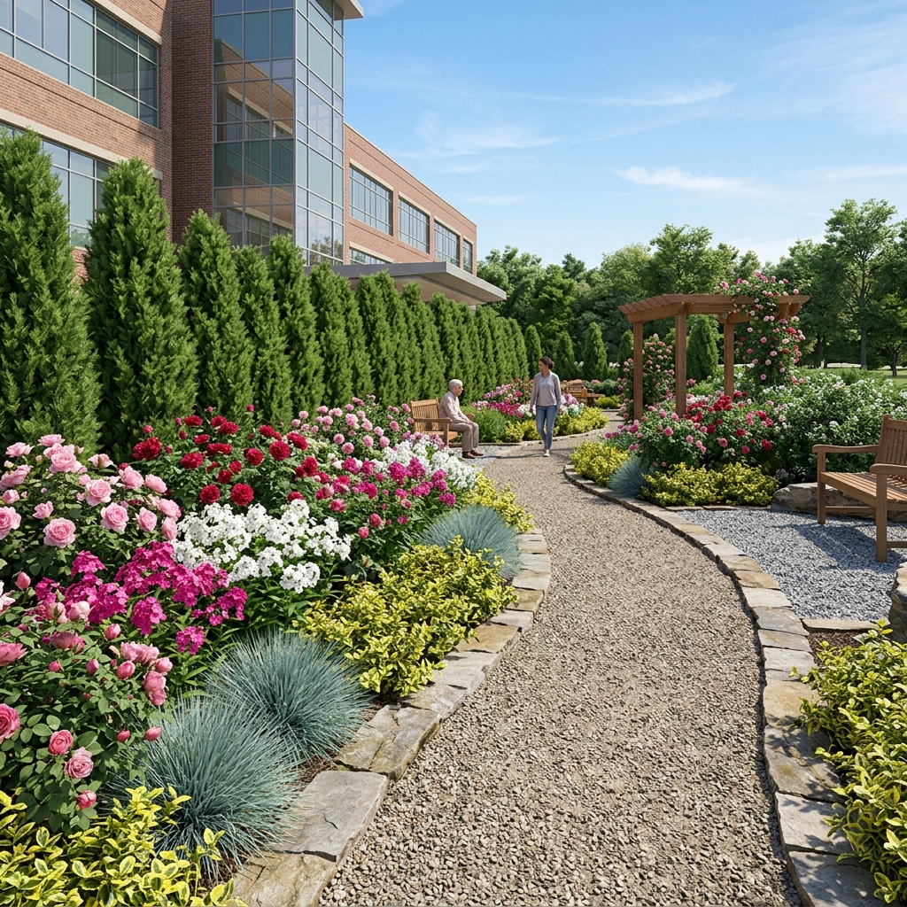
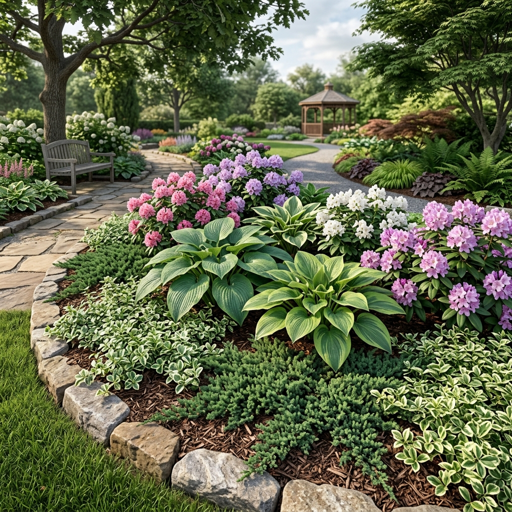
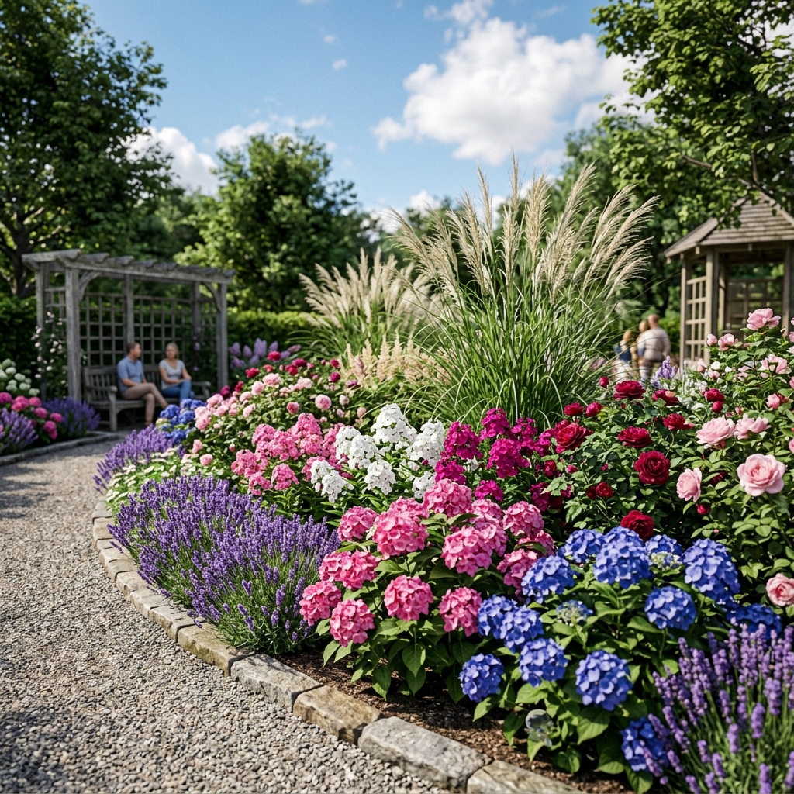

Натисніть на значки на генеральному плані, щоб переглянути деталі кожної ділянки.


Ця ділянка маршруту фокусується на створенні захищеного мікроклімату. Доріжки мають звивисту форму, що природним чином уповільнює рух, заохочуючи до неспішної прогулянки та перемикаючи увагу з повсякденних турбот.

Продовження маршруту, де акцент зміщується на ароматерапію та більш виражені текстури. Це місце створено для підняття настрою та активації нюху.

Зона для глибокої релаксації. Спокійні зелені відтінки, гра світла й тіні та різноманітність фактур листя знижують зорове навантаження.
Ефект: Зниження стресу, концентрація на деталях.

Динамічна, яскрава зона для підняття настрою. Використання злаків додає елемент руху (кінетики) та звуку (шерех).
Ефект: Емоційне піднесення, активна стимуляція відчуттів.